Archivos y protección del proyecto
- Ensamblaje de partida
- Proyecto local de validación mecánica de fase 2
- Respaldo de fase 2
- Respaldo local de fase 2.1
- Proyecto V2
- ESAMBLAJECOMPLETO_VALIDADO_SIMULACION_V2.iam
Se comprobaron 167 archivos de la fase 2 y su copia con SHA-256. Se registraron 0 diferencias y 0 enlaces inválidos. La escena anterior se conserva en el respaldo. La huella geométrica de los documentos existentes cambió en rodillo con rodamiento.ipt y Banda.ipt. Se agregó un prisionero y se actualizaron relaciones de montaje en los IAM. Los materiales y apariencias existentes registraron 0 cambios materiales y 0 cambios de apariencia. La masa CAD final registrada es 2,60259 kg.
Ensamblaje V2 · Escena V2 · STEP · Manifiesto · Comparación · SHA-256 de los archivos de entrega
Ramal superior sobre los seis apoyos
Se conservaron los montajes de los palitos. Sus caras centrales coplanares definen el tramo de deslizamiento. Los resaltes de fijación quedan fuera de los 100 mm de producto. El perfil de banda enlaza el tramo elevado con ambos rodillos de extremo, conserva el retorno sobre los intermedios y forma un sólido continuo de 100 × 1 mm. La longitud geométrica por fibra media es 1196,85 mm. Su validez como longitud de corte depende de la pretensión y del laminado medidos.
| Instancia | Cara útil mm | Distancia mínima banda mm | Sujeción |
|---|---|---|---|
| palito arriba de la banda:1 | 12,820 | 0,00000 | Fija |
| palito arriba de la banda:2 | 12,820 | 0,00000 | Fija |
| palito arriba de la banda:3 | 12,820 | 0,00000 | Fija |
| palito arriba de la banda:4 | 12,820 | 0,00000 | Fija |
| palito arriba de la banda:5 | 12,820 | 0,00000 | Fija |
| palito arriba de la banda:6 | 12,820 | 0,00000 | Fija |
Se comprobaron las 11 interfaces con el CAD nativo. Las tangencias de los cinco rodillos y el asiento de los seis apoyos se registraron dentro de la tolerancia de cálculo, con 0 penetraciones volumétricas registradas en ese conjunto. La altura del eje óptico provisional sobre el nuevo ramal es 80,95 mm y la distancia longitudinal a la zona del pivote es 288,52 mm. El campo de visión, la iluminación y el enfoque quedan para calibración física. Distancias y cotas nativas
Transmisión directa JGA25-370 a rodillo POM
La salida comercial D4 conserva su geometría. El CAD medía 0,70 mm de separación inicial, 8,00 mm de tramo plano y 1,50 mm del centro al plano de apriete. El prototipo ha sido confirmado por el propietario como conexión directa mediante prisionero.
La extensión axial provisional es de 6,70 mm y Ø13,0 mm. El cilindro D4 entra 6,00 mm en un taladro Ø4,10 mm y 6,25 mm de profundidad. El fondo deja 0,25 mm. Se diseñó un agujero redondo para que el tornillo apoye sobre el plano y el acoplamiento pueda representarse como capaz de deslizar con el prisionero flojo. La geometría del M3 × 4 representa su envolvente, la punta y el acceso hexagonal. Paso, apriete, material de la pieza real y resistencia de la rosca del POM requieren verificación. Los parámetros principales quedaron editables en el IPT. Referencia dimensional de tornillería
Se aplicó un alivio Ø27,4 mm sobre 2,07 mm del hombro exterior a la franja útil. El tambor conserva Ø30 mm en la superficie de trabajo. El apoyo opuesto se corrigió 0,692 mm en su referencia de altura. El descentrado final es 0,00000 mm y quedó una holgura axial CAD de 0,030 mm. Conviene medir en el prototipo las cotas de asiento y el acceso al prisionero antes de fabricar. Cotas del acople · Alineación del apoyo
La relación angular activa conserva la fase del plano D con el rodillo. Un accionamiento reversible en el ensamble flexible midió -15,000° en el eje y -15,000° en el rodillo. El prisionero quedó unido al motriz por tres planos. La consulta genérica de Inventor informó 3T/3R para esa ocurrencia dependiente. La prueba del montaje completo comprobó el mismo giro de las tres piezas en ocho posiciones. Ensayo del prisionero · Accionamiento 1:1 · Giros desde disco
Ángulos e interferencias durante el giro
| Consigna relativa ° | Eje D4 ° | Rodillo ° | Prisionero ° | Interferencias del grupo |
|---|---|---|---|---|
| 15 | -15,000 | -15,000 | -15,000 | 0 |
| 45 | -45,000 | -45,000 | -45,000 | 0 |
| 75 | -75,000 | -75,000 | -75,000 | 0 |
| 30 | -30,000 | -30,000 | -30,000 | 0 |
| 0 | 0,000 | 0,000 | 0,000 | 0 |
| -30 | 30,000 | 30,000 | 30,000 | 0 |
| -45 | 45,000 | 45,000 | 45,000 | 0 |
| 0 | 0,000 | 0,000 | 0,000 | 0 |
Restricciones, interferencias y giro del desviador
El CAD se reabrió con la carcasa del JGA fija, ambos subensamblajes flexibles y 0 relaciones activas con estado incorrecto. El conducido y los tres intermedios mantienen un giro cada uno. Los seis apoyos, cámaras, rieles y carcasas permanecen fijos. Los registros incluyen restricciones anteriores y finales y los cambios de pose calculados. Relaciones iniciales · Relaciones finales · Cambios de posición · Piezas y materiales
Inventario y lecturas de grados de libertad
| Conjunto | Ocurrencia | T | R | Función o vínculo |
|---|---|---|---|---|
| ESAMBLAJECOMPLETO_VALIDADO_SIMULACION_V2.iam | BANDA_TRANSPORTADORA_PLA_SBR_FINAL:1 | 0 | 0 | Subensamblaje de montaje |
| ESAMBLAJECOMPLETO_VALIDADO_SIMULACION_V2.iam | Motorreductor:1 | 3 | 3 | Subensamblaje de montaje |
| BANDA_TRANSPORTADORA_PLA_SBR_FINAL.iam | Riel Banda:1 | 0 | 0 | Estructura fija |
| BANDA_TRANSPORTADORA_PLA_SBR_FINAL.iam | Riel Banda:2 | 0 | 0 | Estructura fija |
| BANDA_TRANSPORTADORA_PLA_SBR_FINAL.iam | Pata1:1 | 0 | 0 | Estructura fija |
| BANDA_TRANSPORTADORA_PLA_SBR_FINAL.iam | Pata1:2 | 0 | 0 | Estructura fija |
| BANDA_TRANSPORTADORA_PLA_SBR_FINAL.iam | Pata2:1 | 0 | 0 | Estructura fija |
| BANDA_TRANSPORTADORA_PLA_SBR_FINAL.iam | Pata2:2 | 0 | 0 | Estructura fija |
| BANDA_TRANSPORTADORA_PLA_SBR_FINAL.iam | palito arriba de la banda:1 | 0 | 0 | Apoyo inferior fijo de deslizamiento SBR–PLA |
| BANDA_TRANSPORTADORA_PLA_SBR_FINAL.iam | palito arriba de la banda:2 | 0 | 0 | Apoyo inferior fijo de deslizamiento SBR–PLA |
| BANDA_TRANSPORTADORA_PLA_SBR_FINAL.iam | palito arriba de la banda:3 | 0 | 0 | Apoyo inferior fijo de deslizamiento SBR–PLA |
| BANDA_TRANSPORTADORA_PLA_SBR_FINAL.iam | palito arriba de la banda:4 | 0 | 0 | Apoyo inferior fijo de deslizamiento SBR–PLA |
| BANDA_TRANSPORTADORA_PLA_SBR_FINAL.iam | Pieza negra:1 | 0 | 0 | Soporte, guía o componente fijo |
| BANDA_TRANSPORTADORA_PLA_SBR_FINAL.iam | Pieza negra:2 | 0 | 0 | Soporte, guía o componente fijo |
| BANDA_TRANSPORTADORA_PLA_SBR_FINAL.iam | pieza negra derecha:2 | 0 | 0 | Soporte, guía o componente fijo |
| BANDA_TRANSPORTADORA_PLA_SBR_FINAL.iam | BaseRodamiento:1 | 0 | 0 | Soporte, guía o componente fijo |
| BANDA_TRANSPORTADORA_PLA_SBR_FINAL.iam | BaseRodamiento:5 | 0 | 0 | Soporte, guía o componente fijo |
| BANDA_TRANSPORTADORA_PLA_SBR_FINAL.iam | Base Rodamiento delgado:1 | 0 | 0 | Soporte, guía o componente fijo |
| BANDA_TRANSPORTADORA_PLA_SBR_FINAL.iam | Rodamiento grande:1 | 0 | 0 | Soporte, guía o componente fijo |
| BANDA_TRANSPORTADORA_PLA_SBR_FINAL.iam | BaseRodamiento:6 | 0 | 0 | Soporte, guía o componente fijo |
| BANDA_TRANSPORTADORA_PLA_SBR_FINAL.iam | rodamiento:3 | 0 | 0 | Soporte, guía o componente fijo |
| BANDA_TRANSPORTADORA_PLA_SBR_FINAL.iam | Banda:1 | 0 | 0 | Banda flexible / geometría visual |
| BANDA_TRANSPORTADORA_PLA_SBR_FINAL.iam | SERVOMOTOR:2 | 0 | 0 | Carcasa de actuador |
| BANDA_TRANSPORTADORA_PLA_SBR_FINAL.iam | Rodillos mitad banda:1 | 0 | 1 | Rodillo giratorio |
| BANDA_TRANSPORTADORA_PLA_SBR_FINAL.iam | Rodillos mitad banda:2 | 0 | 1 | Rodillo giratorio |
| BANDA_TRANSPORTADORA_PLA_SBR_FINAL.iam | Rodillos mitad banda:3 | 0 | 1 | Rodillo giratorio |
| BANDA_TRANSPORTADORA_PLA_SBR_FINAL.iam | rodillo con rodamiento 2:1 | 0 | 1 | Rodillo giratorio |
| BANDA_TRANSPORTADORA_PLA_SBR_FINAL.iam | rodillo con rodamiento:2 | 0 | 1 | Rodillo giratorio |
| BANDA_TRANSPORTADORA_PLA_SBR_FINAL.iam | rodamiento:5 | 0 | 0 | Soporte, guía o componente fijo |
| BANDA_TRANSPORTADORA_PLA_SBR_FINAL.iam | rodamiento:6 | 0 | 0 | Soporte, guía o componente fijo |
| BANDA_TRANSPORTADORA_PLA_SBR_FINAL.iam | rodamiento:7 | 0 | 0 | Soporte, guía o componente fijo |
| BANDA_TRANSPORTADORA_PLA_SBR_FINAL.iam | Pieza8:1 | 0 | 0 | Soporte, guía o componente fijo |
| BANDA_TRANSPORTADORA_PLA_SBR_FINAL.iam | Desviador:1 | 0 | 1 | Clasificación / pivote servo |
| BANDA_TRANSPORTADORA_PLA_SBR_FINAL.iam | Cabezal camara:1 | 0 | 0 | Soporte, guía o componente fijo |
| BANDA_TRANSPORTADORA_PLA_SBR_FINAL.iam | Paralela_diseno:1 | 0 | 0 | Soporte, guía o componente fijo |
| BANDA_TRANSPORTADORA_PLA_SBR_FINAL.iam | palito arriba de la banda:5 | 0 | 0 | Apoyo inferior fijo de deslizamiento SBR–PLA |
| BANDA_TRANSPORTADORA_PLA_SBR_FINAL.iam | palito arriba de la banda:6 | 0 | 0 | Apoyo inferior fijo de deslizamiento SBR–PLA |
| BANDA_TRANSPORTADORA_PLA_SBR_FINAL.iam | Pieza8:5 | 0 | 0 | Soporte, guía o componente fijo |
| BANDA_TRANSPORTADORA_PLA_SBR_FINAL.iam | Pieza8:6 | 0 | 0 | Soporte, guía o componente fijo |
| BANDA_TRANSPORTADORA_PLA_SBR_FINAL.iam | Pieza8:7 | 0 | 0 | Soporte, guía o componente fijo |
| BANDA_TRANSPORTADORA_PLA_SBR_FINAL.iam | Paralela_diseno:3 | 0 | 0 | Soporte, guía o componente fijo |
| BANDA_TRANSPORTADORA_PLA_SBR_FINAL.iam | Laiminamodific:1 | 0 | 0 | Soporte, guía o componente fijo |
| BANDA_TRANSPORTADORA_PLA_SBR_FINAL.iam | Camara:1 | 0 | 0 | Sensor |
| BANDA_TRANSPORTADORA_PLA_SBR_FINAL.iam | Prisionero_M3x4:1 | 3 | 3 | Unido al motriz por tres planos. Giro solidario comprobado. |
| Motorreductor.iam | Reductora_1 | 0 | 0 | Carcasa de actuador |
| Motorreductor.iam | Motor_DC_2 | 0 | 0 | Carcasa de actuador |
| Motorreductor.iam | Tapa_3 | 0 | 0 | Soporte, guía o componente fijo |
| Motorreductor.iam | Separador_4 | 0 | 0 | Soporte, guía o componente fijo |
| Motorreductor.iam | PCB_encoder_5 | 0 | 0 | Soporte, guía o componente fijo |
| Motorreductor.iam | Conector_6_pines_6 | 0 | 0 | Soporte, guía o componente fijo |
| Motorreductor.iam | Eje_encoder_7 | 0 | 1 | Rotor del encoder |
| Motorreductor.iam | Disco_magnetico_8 | 0 | 1 | Rotor del encoder |
| Motorreductor.iam | Sensor_Hall_1_9 | 0 | 0 | Sensor |
| Motorreductor.iam | Sensor_Hall_2_10 | 0 | 0 | Sensor |
| Motorreductor.iam | Pin_1_11 | 0 | 0 | Fijación o conexión |
| Motorreductor.iam | Pin_2_12 | 0 | 0 | Fijación o conexión |
| Motorreductor.iam | Pin_3_13 | 0 | 0 | Fijación o conexión |
| Motorreductor.iam | Pin_4_14 | 0 | 0 | Fijación o conexión |
| Motorreductor.iam | Pin_5_15 | 0 | 0 | Fijación o conexión |
| Motorreductor.iam | Pin_6_16 | 0 | 0 | Fijación o conexión |
| Motorreductor.iam | Tornillo_1_17 | 0 | 0 | Fijación o conexión |
| Motorreductor.iam | Tornillo_2_18 | 0 | 0 | Fijación o conexión |
| Motorreductor.iam | Eje_salida_D4_19 | 0 | 1 | Eje de salida del JGA25-370 |
| Componente A | Componente B | Inicial mm³ | Final mm³ | Diagnóstico |
|---|---|---|---|---|
| Conector_6_pines_6 | Disco_magnetico_8 | 0,558 | 0,558 | Posible invasión del rotor del encoder por el conector reconstruido. Medir la holgura y el asiento de la PCB. |
| Desviador:1 | SERVOMOTOR:2 | 25,133 | 25,133 | Solape localizado en el eje del horn. Se conservó el montaje físico. Revisar cómo está representado el acople. |
| Riel Banda:1 | Rodillos mitad banda:1 | 4,522 | 4,522 | El extremo del rodillo intersecta el perfil. Confirmar los pasos del eje y el taladrado real del riel. |
| Riel Banda:1 | Rodillos mitad banda:2 | 181,320 | 181,320 | El extremo del rodillo intersecta el perfil. Confirmar los pasos del eje y el taladrado real del riel. |
| Riel Banda:1 | Rodillos mitad banda:3 | 183,639 | 183,639 | El extremo del rodillo intersecta el perfil. Confirmar los pasos del eje y el taladrado real del riel. |
| Rodamiento grande:1 | rodillo con rodamiento:2 | 182,738 | 0,000 | Suprimido el solape por alivio coaxial fuera de los 100 mm útiles. |
| rodamiento:6 | rodillo con rodamiento:2 | 54,930 | 0,000 | Corrección de altura de la base y retención axial del aro. Holgura nominal de 0,030 mm. |
Se comprobaron 24 parejas de malla con envolventes comunes. En 13 parejas hubo contacto o intersección de triángulos. La lista no aporta volumen de penetración en mallas abiertas. Los pares de soportes, rodamientos y perfiles se interpretan como candidatos de ajuste o asiento a contrastar.
Pares triangulares
| Malla o sólido A | Malla o sólido B |
|---|---|
| Riel Banda:1 | pieza negra derecha:2 |
| Riel Banda:2 | Pieza negra:1 |
| Pieza negra:1 | BaseRodamiento:5 |
| Pieza negra:2 | BaseRodamiento:6 |
| pieza negra derecha:2 | BaseRodamiento:1 |
| BaseRodamiento:1 | rodillo con rodamiento 2:1 |
| BaseRodamiento:1 | rodamiento:7 |
| BaseRodamiento:5 | rodillo con rodamiento 2:1 |
| BaseRodamiento:6 | rodillo con rodamiento:2 |
| BaseRodamiento:6 | rodamiento:6 |
| SERVOMOTOR:2 | Laiminamodific:1 |
| Paralela_diseno:1 | Laiminamodific:1 |
| Paralela_diseno:3 | Laiminamodific:1 |
El barrido refinado en pasos de 0,25° encontró el último ángulo libre muestreado a la derecha en -42,25° y a la izquierda en 45,00°. La primera colisión se midió a -42,50° y 45,25°, respectivamente. La escena limita cada lado de forma independiente y ensaya -40° y +40°. El CAD se conserva a 0°. Los límites se aplicaron en CoppeliaSim. La geometría, el servo y su montaje se conservaron. Barrido por muestra
Física y ensayos de CoppeliaSim
Se recompusieron 61 instancias a partir de 41 STL en milímetros y factores explícitos a metros. La comprobación de envolventes y transformaciones de escena dio un desvío máximo de 0,000000 mm. El STEP contiene sólidos B-Rep y los STL incluyen las piezas de malla. El manifiesto registra masas, centros de masa, ejes, momentos de inercia y relaciones mecánicas. Se conservaron las geometrías de rieles, soportes y placa del desviador para estudiar sus contactos. Correspondencia CAD–escena · Respuesta de colisión en CoppeliaSim
El ramal físico se construyó con placas tangenciales contiguas a partir del perfil CAD. Su velocidad procede de un integrador de transmisión. El modelo emplea una curva par–velocidad provisional, inercias reflejadas, límites de adherencia por pretensión, impulsos de fricción en los seis apoyos y resistencia adicional por carga o atasco. En el estado normal eje y rodillo comparten giro. El aflojamiento limita el par y el desacoplamiento separa ambas inercias. Los rodillos pasivos siguen el desplazamiento de la banda con rodadura equivalente. Modelo equivalente ejecutado
Escena guardada y reabierta. Se integró la dinámica de la transmisión bajo consignas locales y se usó Bullet para el movimiento del testigo. En la condición de 170 RPM de consigna, el caso de referencia calculó 0,2409 m/s y el caso con más fricción y 80 g de carga calculó 0,1912 m/s. El aflojamiento ilustrativo produjo 164,32 RPM del D4 y 0,00 RPM del rodillo. La deriva de encoder inyectada en el canal de observación produjo un residuo de 25 RPM. El estado calculado del motriz conservó un residuo de 0 RPM en su canal.
| Caso | Consigna RPM | Eje D4 RPM | Rodillo RPM | Banda m/s | Par eje Nm | Fuerza resistente N |
|---|---|---|---|---|---|---|
| Referencia 50 | 50 | 30,91 | 30,91 | 0,0485 | 0,0077 | 0,502 |
| Referencia 100 | 100 | 81,92 | 81,92 | 0,1287 | 0,0079 | 0,502 |
| Referencia 150 | 150 | 132,94 | 132,94 | 0,2088 | 0,0082 | 0,502 |
| Referencia 170 | 170 | 153,35 | 153,35 | 0,2409 | 0,0083 | 0,502 |
| Apoyos con resistencia | 170 | 121,73 | 121,73 | 0,1912 | 0,0200 | 1,292 |
| Atasco | 170 | 0,00 | 0,00 | 0,0000 | 0,0650 | 4,333 |
| Prisionero aflojado | 170 | 164,32 | 0,00 | 0,0000 | 0,0042 | 0,280 |
| Acople abierto | 170 | 175,67 | 0,00 | 0,0000 | 0,0000 | 0,000 |
| Traccion reducida | 170 | 161,89 | 161,89 | 0,0000 | 0,0051 | 0,289 |
| Deriva encoder sintetica | 170 | 153,35 | 153,35 | 0,2409 | 0,0083 | 0,502 |
| Transporte neutro | 170 | 153,35 | 153,35 | 0,2409 | 0,0083 | 0,502 |
| Clasificacion derecha | 170 | 153,35 | 153,35 | 0,2409 | 0,0083 | 0,502 |
| Clasificacion izquierda | 170 | 153,35 | 153,35 | 0,2409 | 0,0083 | 0,502 |
| Transporte 50 | 50 | 30,91 | 30,91 | 0,0485 | 0,0077 | 0,502 |
| Transporte 100 | 100 | 81,92 | 81,92 | 0,1287 | 0,0079 | 0,502 |
| Transporte 150 | 150 | 132,94 | 132,94 | 0,2088 | 0,0082 | 0,502 |
Transporte y clasificación
Testigo cuboide de 22 × 22 × 20 mm y 20 g, colocado antes de la cámara y dentro de los primeros 20 mm de ramal. Las cuatro consignas del motor se ensayaron con y sin testigo según la tabla. La clasificación se evaluó por contacto con la placa y signo de desplazamiento lateral al salir. Para el paso neutro se usó una tolerancia de ensayo de ±8 mm alrededor de la línea inicial. Los resultados dependen del producto, el apoyo y el instante de giro.
| Prueba con testigo | Paso cámara | Salida ramal | Contacto desviador | Salida completa | Desvío lateral mm | Criterio de clasificación | Retorno ° |
|---|---|---|---|---|---|---|---|
| Transporte neutro | Sí | Sí | Sí | Sí | -2,84 | Sí | 0,0000 |
| Clasificacion derecha | Sí | Sí | Sí | Sí | -13,41 | Sí | 0,0000 |
| Clasificacion izquierda | Sí | Sí | Sí | Sí | 19,27 | Sí | 0,0000 |
| Transporte 50 | Sí | Sí | Sí | Sí | -2,92 | Sí | 0,0000 |
| Transporte 100 | Sí | Sí | Sí | Sí | 15,80 | Pendiente | 0,0000 |
| Transporte 150 | Sí | Sí | Sí | Sí | -9,04 | Pendiente | 0,0000 |
Los contactos discretos de Bullet incluyen eventos de proximidad y pequeñas penetraciones de resolución durante los impactos con la placa. También se ejecutó la comprobación geométrica independiente contra las mallas activas de los obstáculos. El JSON registra los vecinos, puntos de impacto, trazas y contactos por ensayo. Datos de los ensayos
Rozamiento y mediciones pendientes
Las fuerzas normales de los seis apoyos, la masa de carga, la pretensión, el límite de tracción y las pérdidas determinan la velocidad bajo carga. El material que toca el PLA en la cara inferior del laminado, caucho o tela, queda por identificar. La literatura consultada documentó medias de 0,54–0,80 estáticas y 0,38–0,58 cinéticas para una probeta de SBR sobre otro plástico. La caracterización FDM evidencia dependencia del proceso y del contracuerpo. Los valores de las parejas reales siguen por medir. Las constantes del ensayo están separadas en el archivo de calibración. Estudio experimental de SBR · Tribología de probetas FDM · ASTM G115 · Parámetros ajustables
Mediciones requeridas para calibrar el gemelo. El encoder incremental permite inferir velocidad en su eje si se conoce la relación de reducción y los pulsos por vuelta. Hace falta un canal independiente de velocidad de rodillo o banda para distinguir pérdida de acople y deslizamiento. La cámara puede medir paso y clasificación con geometría y tiempos calibrados. Corriente o torque, pretensión, fuerzas de apoyo, estado de la cara inferior y ángulo real del desviador necesitan instrumentación o ensayo específico. El modelo esperado se calcula con consignas y parámetros. La comparación con mediciones locales se almacena como residuo separado. Las pruebas fueron locales en Lua, con el prototipo y el ESP32 fuera del bucle.
La dinámica de motor y banda usa supuestos de ensayo y la deformación del laminado se representa por un equivalente. Los ensayos del testigo corresponden a la escena descrita. La validación de torque, resistencia del prisionero y bandas de detección depende de pruebas físicas.
Capturas y grabación
Las vistas del conjunto y de las tres posiciones del desviador son capturas de Inventor. CoppeliaSim capturó la escena, el testigo y la secuencia de clasificación. Las cuatro secciones de banda y acoplamiento se calcularon sobre los STL en el marco CAD, con colores de identificación. La vista de sección de Inventor devolvió un error de activación durante la revisión. Planos y procedencia de las secciones
Grabación del recorrido y clasificación a la derecha

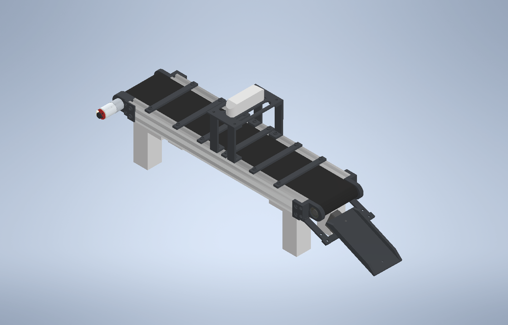
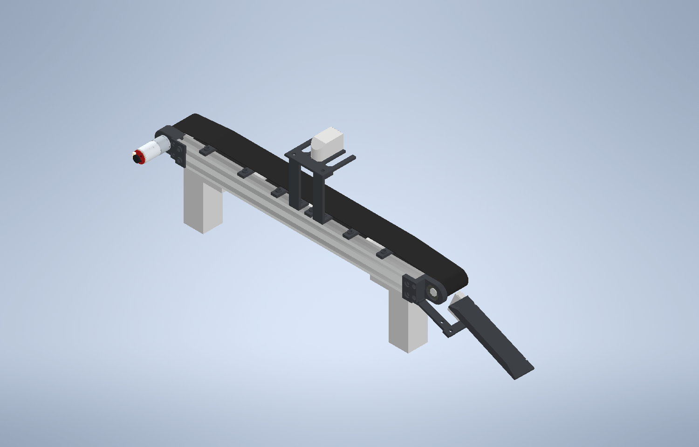
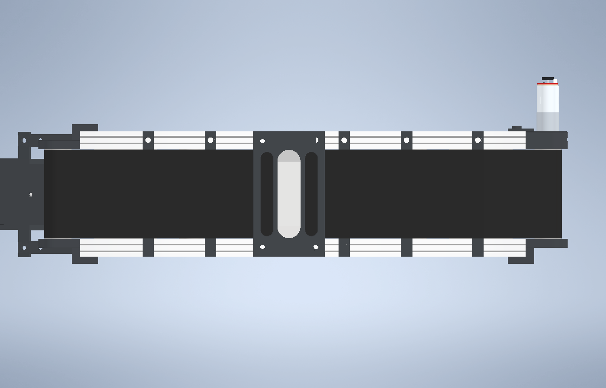
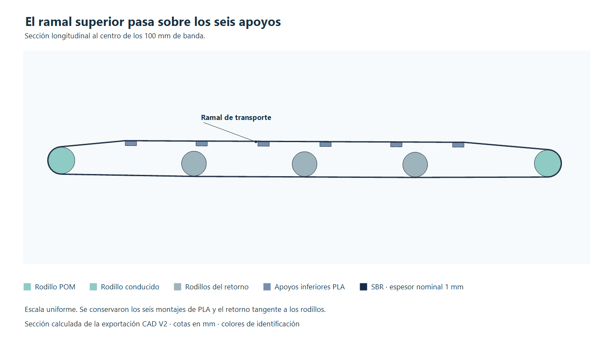
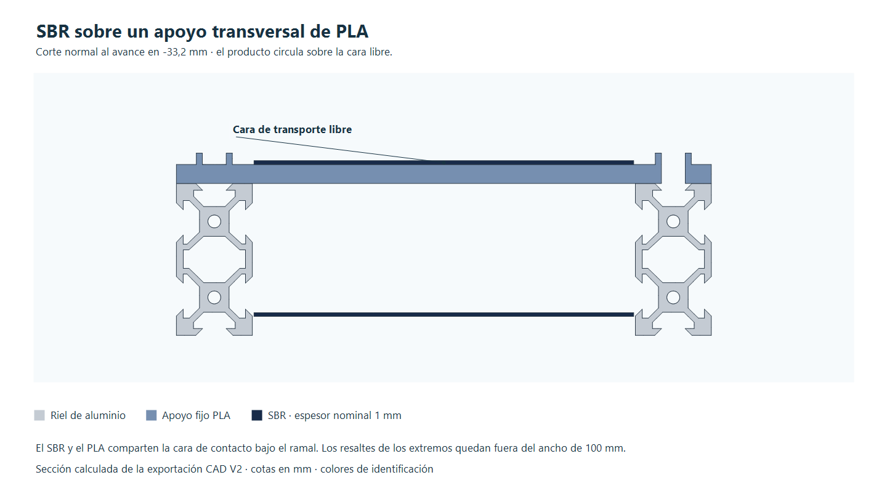
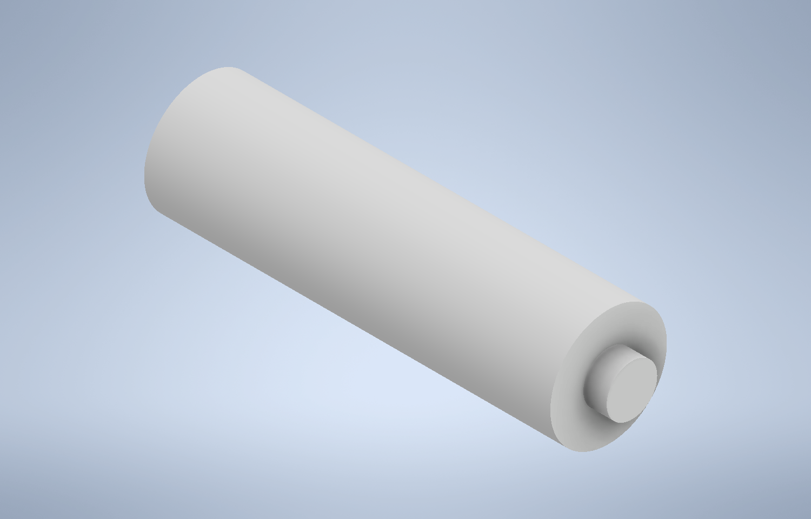
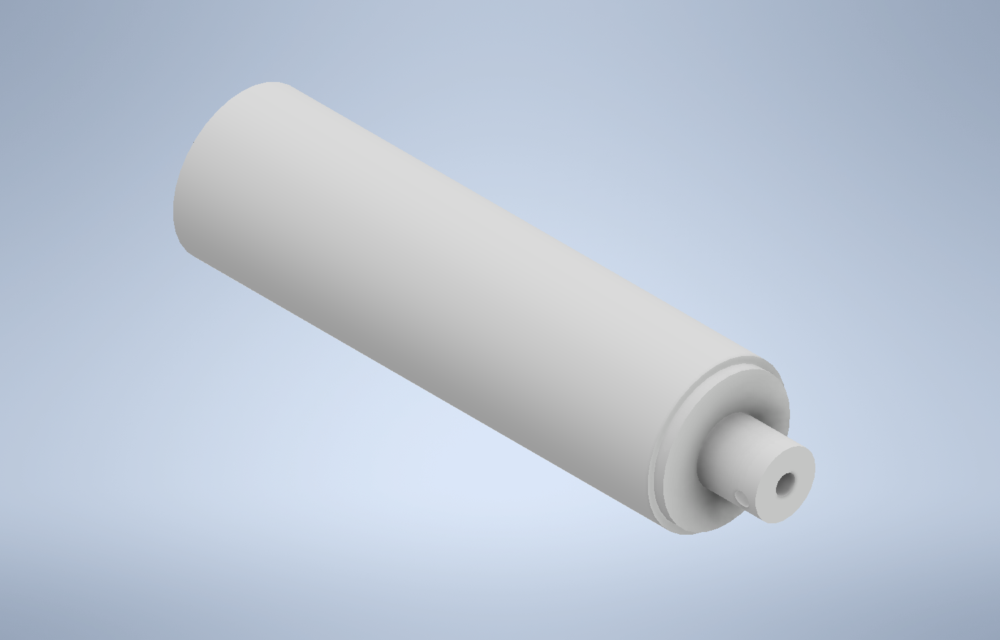
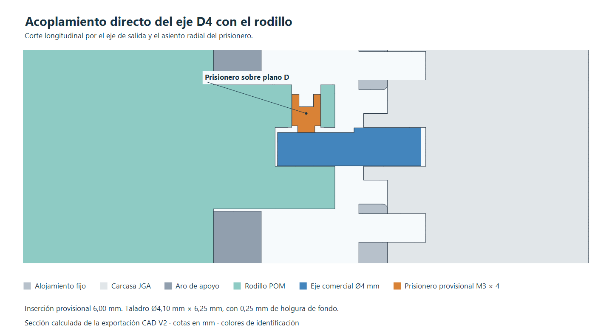
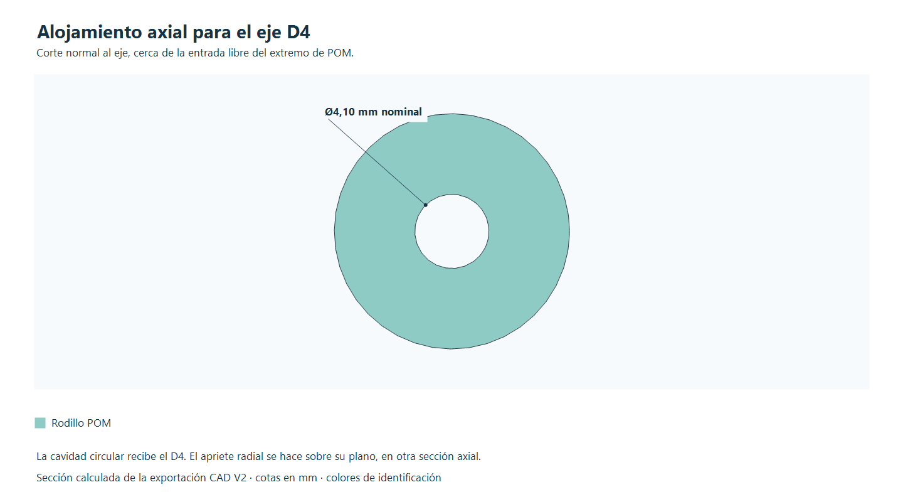
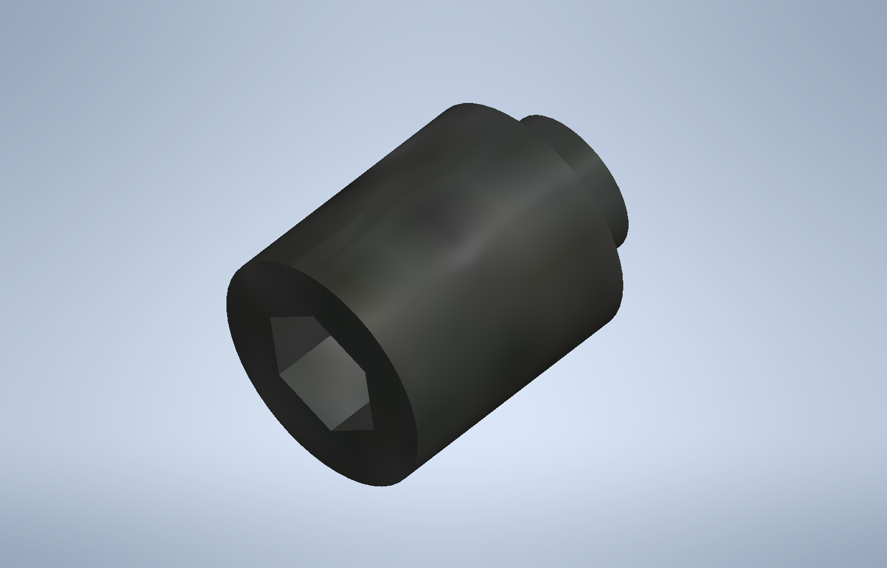
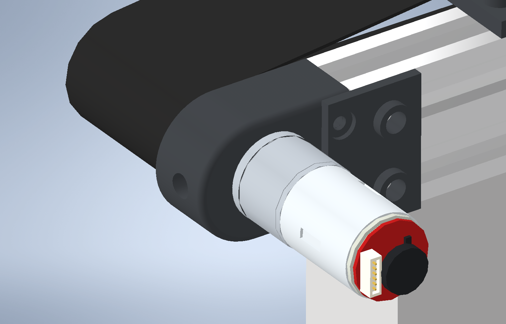
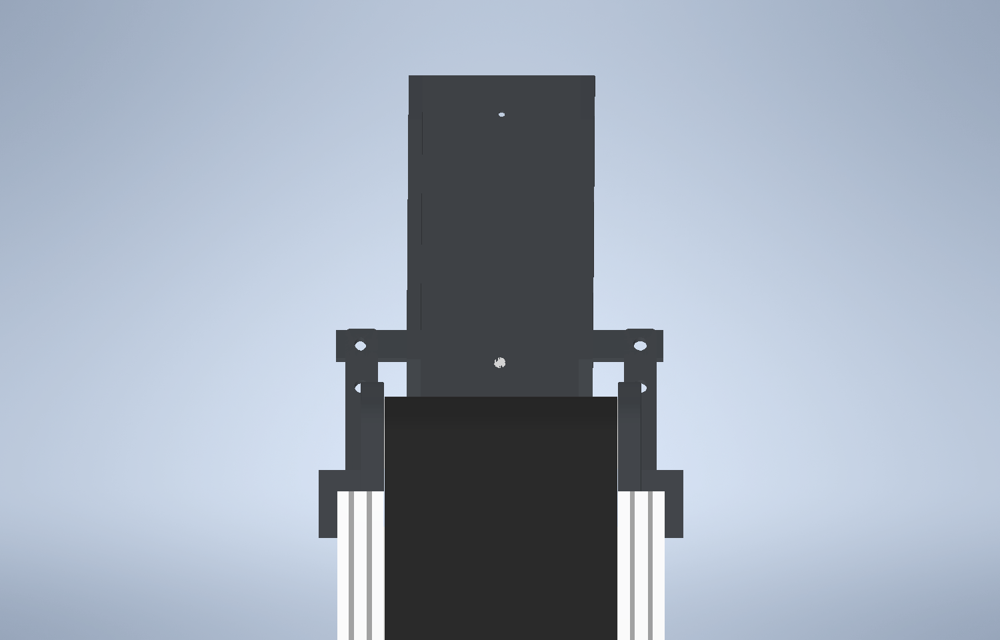
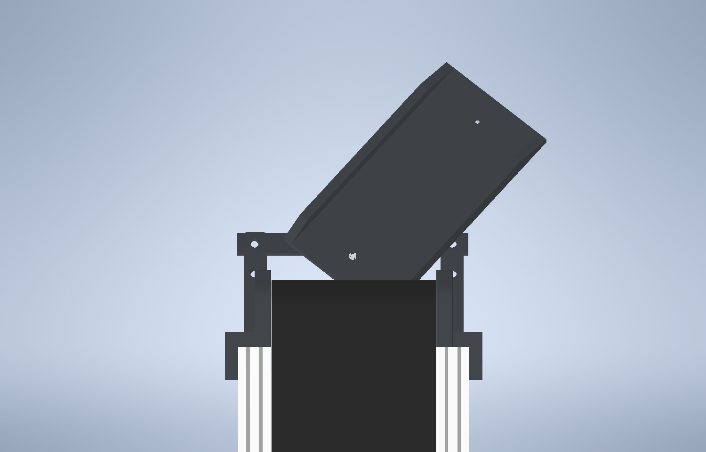
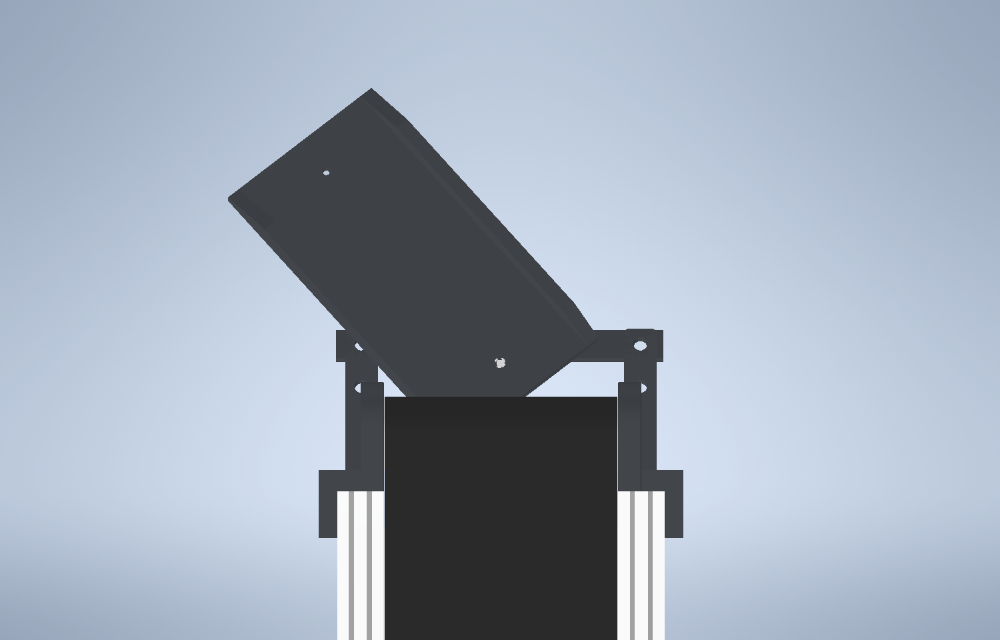
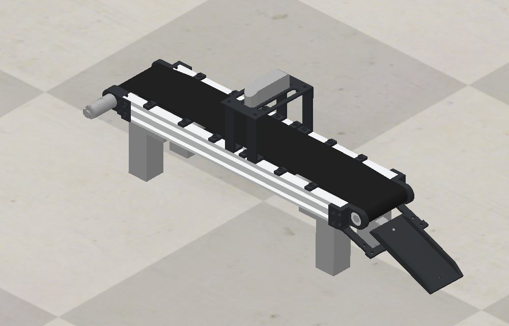
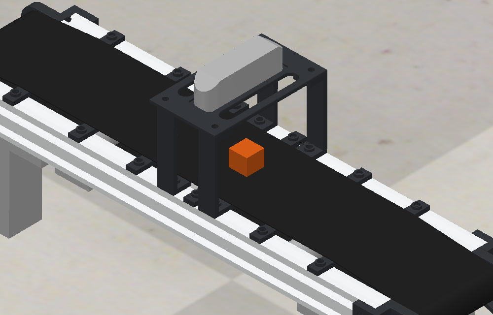
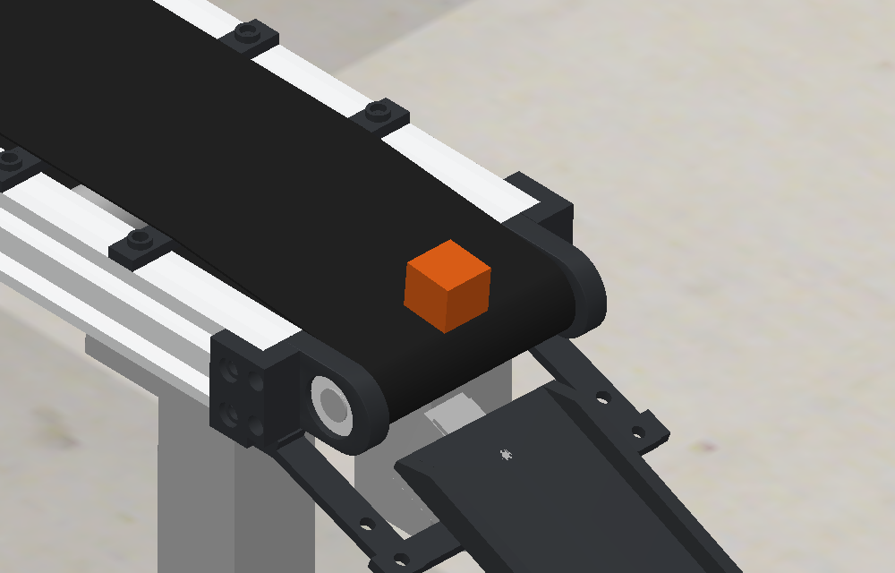